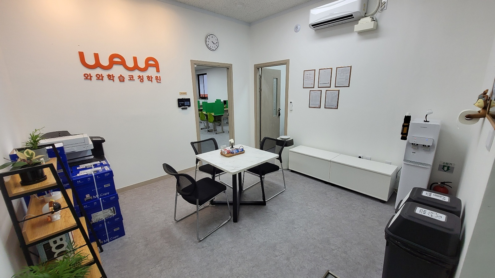
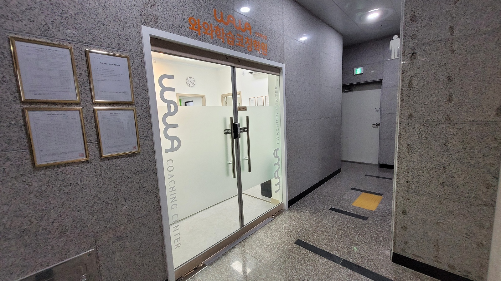

안녕하세요, 전북특별자치도 완주군 이서면 전북혁신도시에 있는 와와학습코칭 전주혁신점입니다. 전주온빛초등학교(온빛초)·전주만성초등학교(만성초) 아이들과 전주양현중학교(양현중)·삼우중학교(삼우중)·전주만성중학교(만성중), 그리고 양현고등학교(양현고) 학생들이 오가는 자리에 있습니다.
오늘은 문제집 이야기를 해 보려 합니다. 2학기 중간고사를 앞두고 아이들이 문제집을 가장 열심히 푸는 시기이고, 동시에 가장 많이 헛수고를 하는 시기이기도 하기 때문입니다.
빨간 색연필로 동그라미를 친 다음이 문제입니다
아이들이 문제집을 푸는 순서는 대개 이렇습니다. 한 단원을 쭉 풉니다. 뒤의 정답지를 펴서 채점합니다. 맞은 것에 동그라미, 틀린 것에 작대기를 긋습니다. 그리고 덮습니다. 여기서 끝납니다.
틀린 문제 옆에 정답만 작게 적어 두는 아이도 있습니다. 조금 더 성실한 아이는 해설을 한 번 읽어 봅니다. 읽고 나면 “아, 이거였네” 싶어집니다. 그 순간의 느낌이 문제입니다. 해설을 읽고 이해한 것과, 다음에 혼자 풀 수 있는 것은 전혀 다른 일인데 아이 입장에서는 둘이 똑같이 느껴집니다.
그래서 시험지를 받아 들면 같은 자리에서 또 틀립니다. 부모님께서는 “문제집을 세 권이나 풀었는데 왜 점수가 안 오르지” 하고 답답해하시고, 아이는 아이대로 억울합니다. 아이도 정말 풀긴 풀었기 때문입니다.
틀린 문제는 세 종류로 갈립니다
저희가 아이와 마주 앉아 채점한 문제집을 볼 때 가장 먼저 하는 일은, 작대기가 그어진 문제를 세 갈래로 나누는 것입니다. 나누는 기준은 어렵지 않습니다. 아이에게 직접 물어봅니다.
- 몰라서 틀린 것 — 그 개념 자체를 배운 기억이 흐릿한 문제입니다. 이건 문제를 더 푼다고 해결되지 않습니다. 교과서나 개념서의 해당 쪽으로 돌아가야 합니다.
- 헷갈려서 틀린 것 — 알긴 아는데 비슷한 것과 뒤섞인 문제입니다. 가장 흔하고, 가장 점수로 잘 바뀌는 종류입니다. 헷갈리는 두 가지를 나란히 놓고 차이만 한 줄로 적게 합니다.
- 급해서 틀린 것 — 조건을 안 읽었거나, 단위를 안 붙였거나, 마지막 계산에서 미끄러진 문제입니다. 아이들은 이걸 “실수”라고 부르며 넘어가는데, 같은 실수가 세 번 반복되면 그건 실수가 아니라 습관입니다.
같은 ‘틀린 문제’ 다섯 개라도 이 셋이 섞여 있으면 해야 할 일이 전부 다릅니다. 그런데 나누지 않고 “틀린 거 다시 풀어”라고만 하면, 아이는 다섯 개를 똑같은 방식으로 한 번 더 풀고 덮습니다. 그러면 처음과 같은 결과가 나옵니다.
그래서 프론트에 복사용지가 늘 쌓여 있습니다
사진 왼쪽에 복합기와 A4 상자가 쌓여 있는 것이 보이실 겁니다. 아이마다 틀린 문제가 다르니, 다시 풀 자료도 아이마다 달라야 하기 때문입니다.
몰라서 틀린 아이에게는 그 개념의 가장 쉬운 문제부터 다시 뽑아 줍니다. 헷갈려서 틀린 아이에게는 헷갈린 그 두 유형만 섞어서 뽑아 줍니다. 급해서 틀린 아이에게는 문제 수를 줄이는 대신, 조건에 밑줄을 긋고 푸는 연습을 시킵니다. 같은 학년 같은 단원이어도 손에 쥐는 종이가 다릅니다.
그리고 다시 푸는 날짜를 정해 둡니다. 틀린 그날 바로 다시 푸는 것은 사실 큰 의미가 없습니다. 방금 해설을 본 기억으로 풀기 때문입니다. 며칠 지난 뒤에 아무 설명 없이 다시 내밀었을 때 풀리면, 그때 비로소 넘어갑니다.
학교가 갈리는 동네라 다시 푸는 범위도 갈립니다
전북혁신도시는 학교가 여러 곳으로 나뉘어 있는 동네입니다. 저희 센터 안내 자료를 기준으로 하면 전주온빛초등학교·전주만성초등학교, 전주양현중학교·삼우중학교·전주만성중학교, 양현고등학교가 가까운 편입니다. 같은 아파트 단지 안에서도 다니는 학교가 갈리는 경우가 있습니다.
학교가 다르면 같은 학년 같은 과목이어도 진도 속도와 시험 범위, 서술형 비중이 다릅니다. 그래서 오답을 정리할 때도 “중2 수학 오답”처럼 뭉뚱그리지 않고, 그 아이 학교의 이번 시험 범위 안에 있는 것부터 먼저 줄을 세웁니다. 시험이 2주 남았는데 범위 밖 단원을 붙잡고 있으면 아무리 성실해도 점수로 돌아오지 않기 때문입니다.
다만 학교별 시험 범위와 평가 방식은 학년도와 담당 선생님에 따라 달라지므로, 정확한 내용은 재학 중인 학교의 안내를 기준으로 하셔야 합니다. 저희도 아이가 받아 온 안내장을 보고 맞춥니다.
문에 ‘코칭’이라고 적어 둔 이유

입구 유리문에 COACHING CENTER라고 세로로 적혀 있습니다. 문구를 멋으로 고른 것은 아닙니다. 저희가 하는 일이 ‘가르치는 것’보다 ‘확인하는 것’에 가깝기 때문입니다.
설명을 잘 하는 일은 학교와 강의가 이미 하고 있습니다. 문제는 설명을 들은 뒤에 아이 혼자 있는 시간입니다. 그 시간에 무엇을 얼마나 했는지, 틀린 것을 어느 갈래로 넘겼는지, 다시 풀기로 한 날짜에 실제로 다시 풀었는지 — 이걸 옆에서 같이 확인하는 것이 코칭입니다.
그래서 상담 테이블에서 정한 것이 문 너머 학습실에서 그대로 굴러가는지를 매번 봅니다. 사진에서 열린 문 너머로 초록 칸막이 책상들이 보이는데, 그 거리가 저희가 유지하려는 거리이기도 합니다. 너무 붙어 있으면 아이가 스스로 할 기회가 없어지고, 너무 떨어져 있으면 확인이 안 됩니다.
집에서 오늘부터 해 보실 수 있는 것
- 채점한 문제집을 한 권 가져와 보게 하세요. 그리고 틀린 문제를 아이 입으로 세 갈래(몰라서·헷갈려서·급해서)로 나누게 해 보십시오. 나누지 못하고 우물거리면, 그 문제는 아직 넘어가면 안 되는 문제입니다.
- 정답을 묻지 말고 “왜 그게 답이야?”라고 물어보세요. 답을 아는 것과 설명할 수 있는 것은 다릅니다. 설명이 30초 안에 나오지 않으면 다시 풀 목록에 넣습니다.
- 다시 풀 날짜를 달력에 적게 하세요. ‘나중에 다시’는 오지 않습니다. 사흘 뒤, 일주일 뒤처럼 눈에 보이는 날짜여야 합니다.
세 가지 모두 부모님께서 문제를 풀어 주실 필요가 없는 일입니다. 수학을 못 하셔도, 영어를 안 배우셨어도 하실 수 있습니다. 아이가 스스로 설명하게 만들고, 날짜를 정하게 하는 것까지가 부모님의 몫입니다.
전주혁신점 찾아오시는 길
와와학습코칭 전주혁신점은 전북특별자치도 완주군 이서면 출판로 42, 4층 402호에 있습니다. 상담은 사진 속 테이블에서 아이와 함께 진행하며, 문제집이나 지난 시험지를 가져오시면 오늘 말씀드린 세 갈래로 바로 나눠 보여 드립니다. 없으셔도 괜찮습니다. 센터에 있는 자료로 같은 방식으로 확인해 드립니다.
※ 이 글의 사진은 와와학습코칭 전주혁신점에서 촬영한 것으로, 촬영 시점과 현재 모습이 다를 수 있습니다. 개설 과목과 운영 시간, 수업 구성은 센터 사정에 따라 달라질 수 있으니 방문 전에 센터로 문의해 주시기 바랍니다. 인근 학교 목록은 센터 안내 자료를 기준으로 했으며, 실제 배정 학교는 거주지와 학년도에 따라 달라집니다. 학교별 시험 범위·서술형 반영 비율·평가 일정은 학교와 학년도에 따라 다르므로 재학 중인 학교에 확인해 주시기 바랍니다. 본문의 오답 정리 방법은 일반적인 학습 지도 관점에서 정리한 것으로, 특정 학교의 출제 방식이나 성적 향상을 보장하지 않습니다.